RAI-E Meeting
July 29, 2026
Marina Estévez Almenzar
Marina Estévez Almenzar
Background
Mathematics and Computer Engineering
University of Granada, 2015-2020
Cognitive Systems & Interactive Media
University Pompeu Fabra, 2019-2020
PhD
Human Reliance on Decision Support Systems in High-Risk Scenarios
University Pompeu Fabra, 2021-2025
JRC Traineeship (HUMAINT)
Ispra (Italy), 2022
JRC Expert Contract (HUMAINT)
Seville, 2023
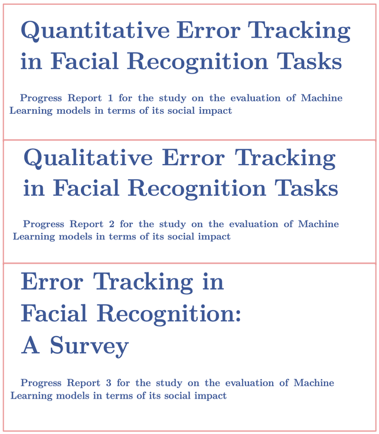
RAI-E Meeting
July 21, 2026
Vision
Accelerate scientific discovery and sustainable agriculture by creating
AI foundation models designed specifically for agricultural science
Genetics
 Environment
Environment
Management
Mission
Develop and openly share a new generation of agriculture-specific foundation models that learn from large, diverse agricultural data
Genetics
Environment
Management
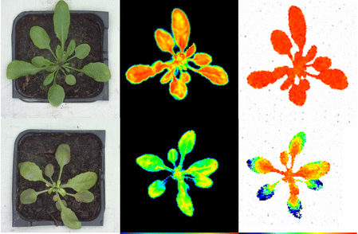
AgriFM-G
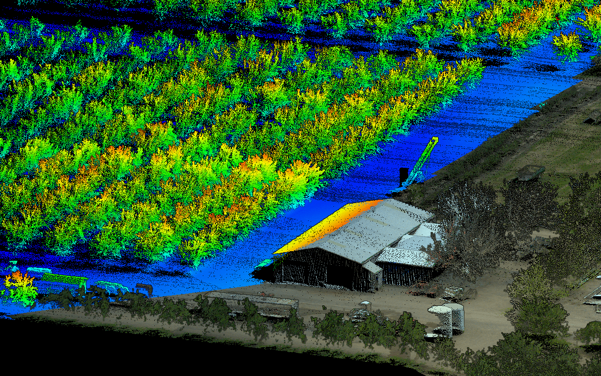
AgriFM-E
AgriFM-M
Phase 1
Single-focus foundation models
Plant imaging FM, able to learn plant structure and growth that can be useful for plant disease detection and breeding ideotypes advisory
Spatio-temporally explicit FM, able to learn how environmental conditions drive plant growth and agricultural land use
Agricultural document understanding FM able to learn how decisions are taken for agricultural management
learns from image data
Plant image libraries: RGB images, 3D images, multi spectral images...
learns from time-series data
Earth observation, weather and soil information, crop calendars...
learns from language data
Scientific literature, agronomy textbooks, crop simulations...
Phase 2
Multimodal alignment and agentic reasoning for multi-focus benchmarking
Cross-Modality Alignment
Embedding Fusion
Instruction Finetuning
Agentic AI Layer
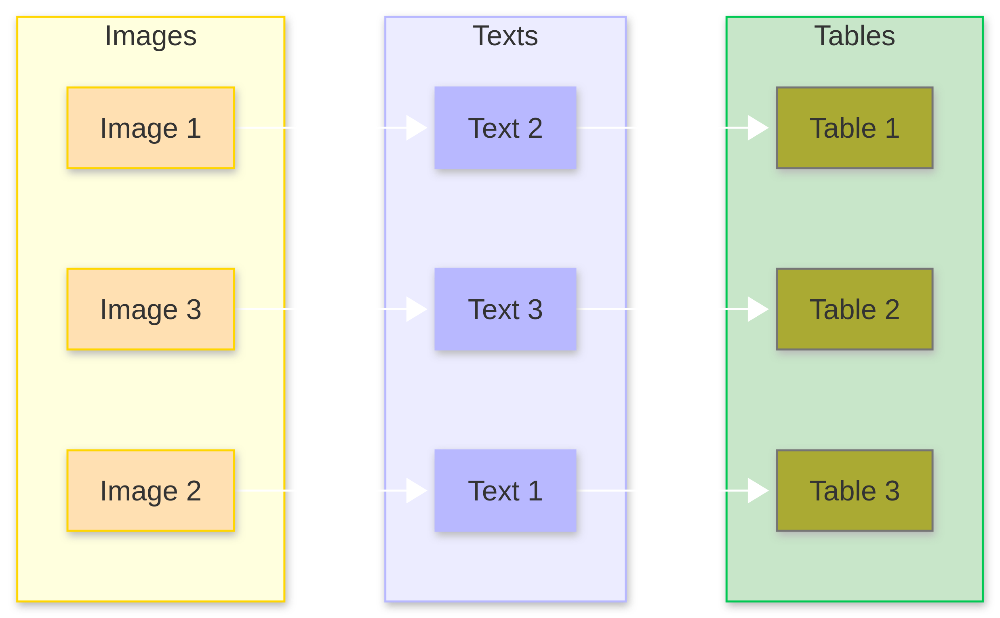
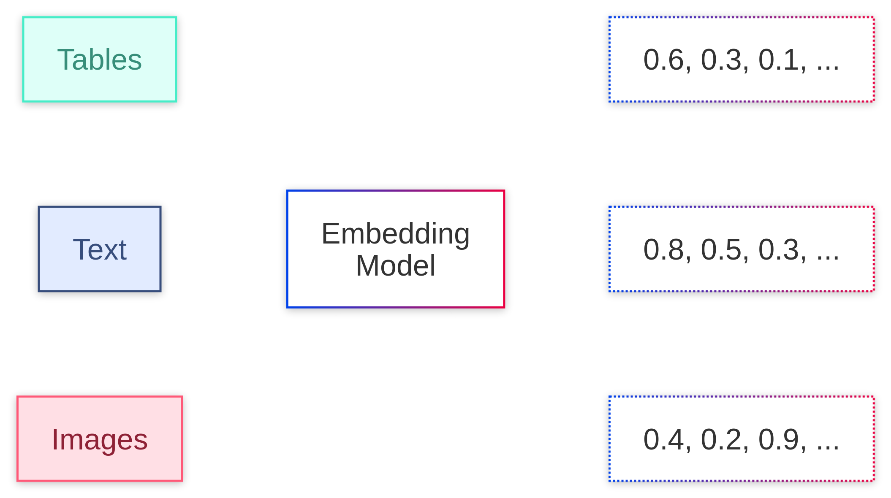
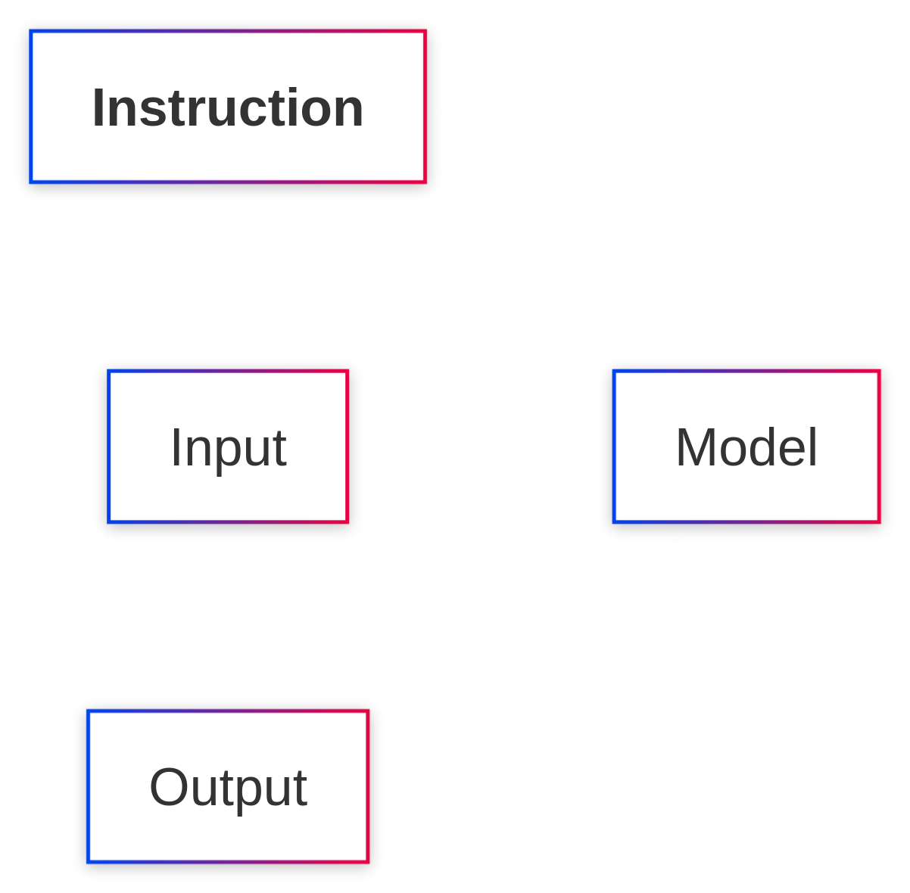
Benchmarking Suite
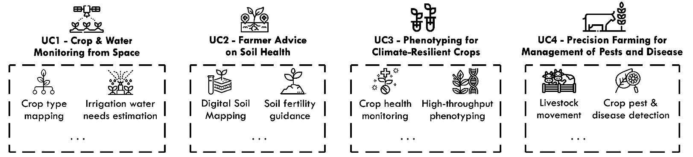
BSC in AgriScience
as leader
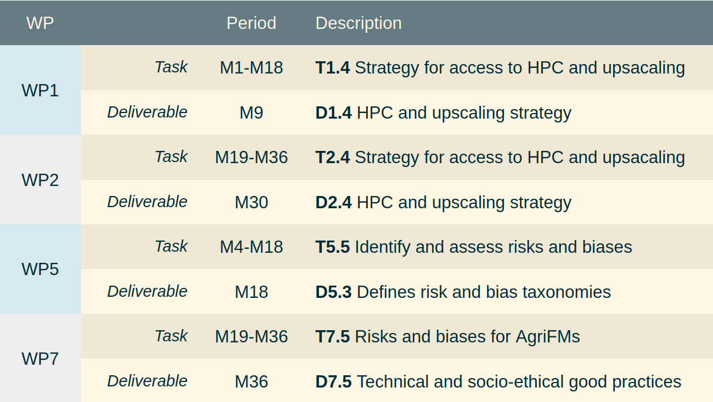
BSC in AgriScience
as contributor
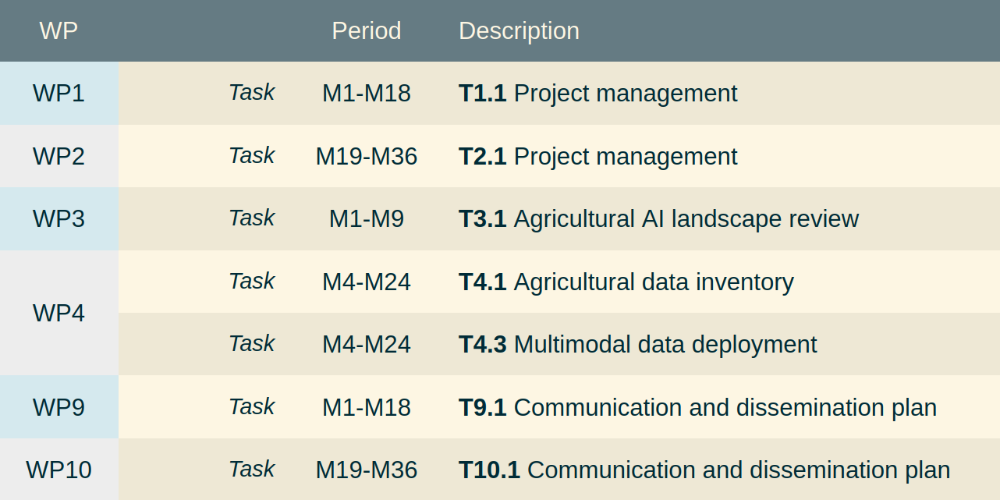
innovation and results
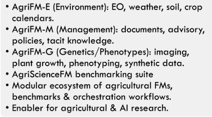
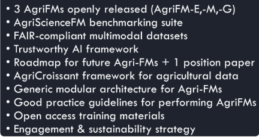